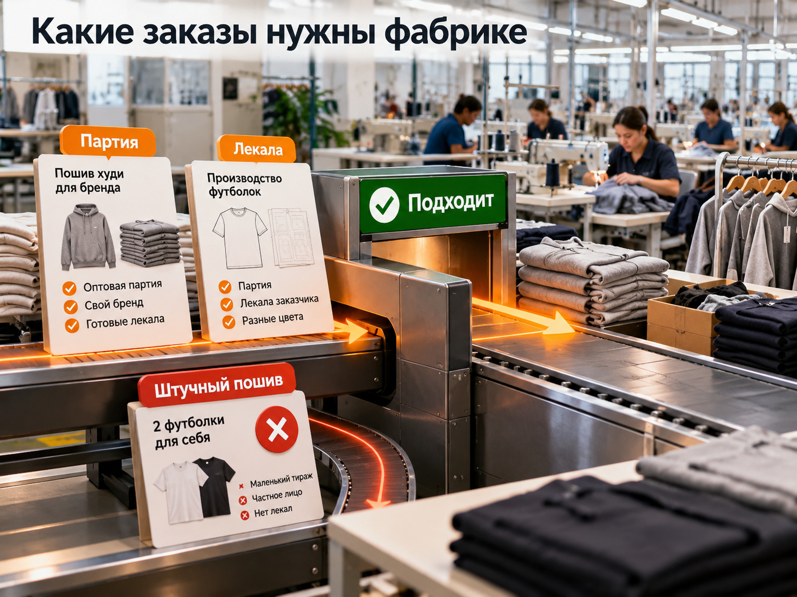
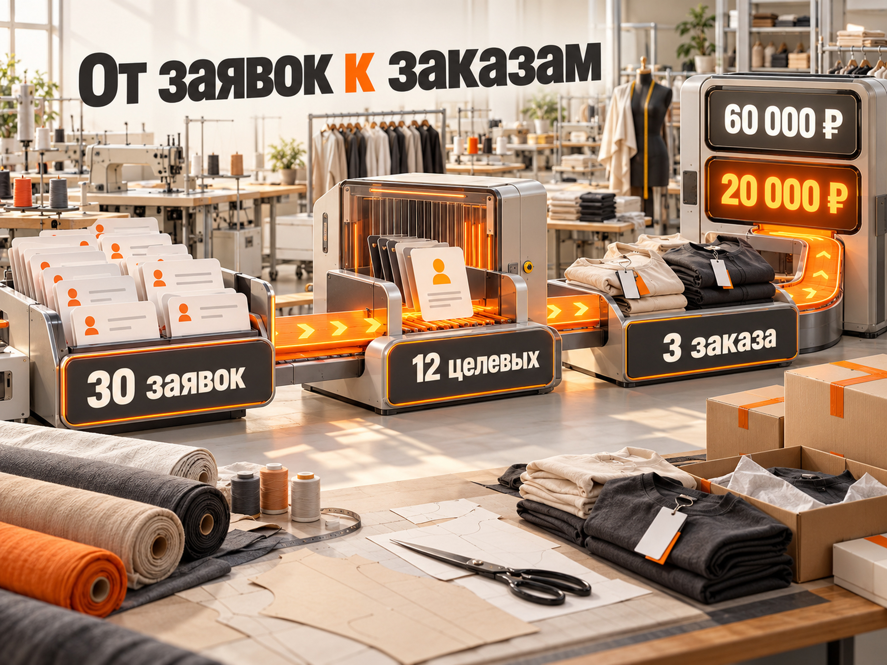

Блог о платном трафике
Реклама швейного производства: как получать заказы на пошив
Чтобы получать заказы на пошив одежды оптом, швейному производству нужно рекламироваться не на всех покупателей одежды, а на конкретных B2B-заказчиков: бренды, продавцов маркетплейсов, оптовиков и компании, которым требуются партии изделий.
Для привлечения такого спроса я в первую очередь рассматриваю Яндекс Директ на Поиске и в РСЯ. Поиск позволяет находить заказчиков, которые уже выбирают фабрику. РСЯ помогает расширять охват и получать обращения от потенциальных клиентов, пока они ещё не приступили к активному поиску подрядчика.
Но количество заявок само по себе мало о чём говорит. Если фабрика принимает партии от нескольких сотен изделий, обращения на штучный пошив не имеют коммерческой ценности. Поэтому рекламу нужно строить вокруг производственных возможностей, минимального заказа и экономики сделки.
Я работал с несколькими проектами в этой нише. В одном лучше всего показал себя Поиск, в другом основным источником заявок стала РСЯ. Ниже разберу, как использовать эти каналы, какие результаты были в проектах и как оценивать бюджет для конкретного производства.
Где швейному производству искать заказчиков
Швейной фабрике подходят несколько каналов привлечения B2B-клиентов. Выбор зависит от специализации производства, объёма свободных мощностей и типа заказчиков.
| Канал | Для какой задачи подходит |
|---|---|
| Яндекс Директ, Поиск | Получать обращения от компаний, которые уже ищут подрядчика на пошив |
| РСЯ | Расширять охват среди предпринимателей и потенциальных оптовых заказчиков |
| SEO | Привлекать органический спрос по услугам, изделиям и географии производства |
| Отраслевые каталоги | Находить заказчиков, сравнивающих производственные компании |
| Прямые B2B-продажи | Выходить на бренды, торговые компании и корпоративных заказчиков |
Если производство уже располагает сайтом и хочет получать обращения в ближайшее время, платную рекламу разумно рассматривать одной из первых. Она позволяет проверять спрос на конкретные услуги и отслеживать стоимость привлечения заказчика.
SEO, каталоги и прямые продажи полезны для диверсификации, но не заменяют оценку результатов каждого канала.
Какие услуги швейного производства рекламировать
Перед запуском рекламы нужно определить, какие именно заказы хочет получать фабрика.
У швейного производства могут быть разные направления:
- пошив одежды оптом по лекалам заказчика;
- контрактное производство для брендов;
- разработка коллекции и пошив под ключ;
- пошив трикотажа, футболок, худи и другой одежды;
- изготовление корпоративной одежды и мерча;
- пошив спецодежды и униформы;
- изготовление образцов;
- продажа готовой одежды оптом.
Эти направления нельзя автоматически объединять в одну рекламную кампанию.
Например, владелец бренда с готовыми лекалами ищет производственные мощности и стоимость пошива партии. Предприниматель, который только запускает бренд, может искать разработку коллекции, лекала, образцы и организацию полного цикла.
Покупателю готовой продукции со склада вообще не требуется услуга пошива.
Главное правило: если у направлений разные заказчики, условия и экономика, их лучше рекламировать отдельно.
В кейсе фабрики детской одежды я разделил пошив под заказ и продажу готовой продукции. Для этих направлений использовали отдельные посадочные страницы, что позволило точнее работать с аудиторией.
Как определить целевого заказчика на пошив
Целевой лид для швейного производства - это обращение потенциального клиента, чей заказ соответствует возможностям фабрики и имеет реальную перспективу продажи.
Для оценки подходят пять основных критериев:
- Изделие. Фабрика действительно производит нужную категорию одежды.
- Партия. Тираж соответствует минимальному и максимальному объёму производства.
- Условия. Производство располагает необходимыми материалами, оборудованием и компетенциями.
- Сроки. Заказ можно выполнить в требуемый период.
- Экономика. Потенциальный заказ соответствует требованиям к рентабельности.
Например, бренд обращается за расчётом партии в 300 изделий. Если фабрика работает с такой категорией продукции и подобными тиражами, обращение может быть квалифицированным.
Запрос на изготовление двух футболок от частного лица не подходит производству, которое принимает только оптовые партии.

Важно заранее объяснить эти условия в рекламе. Иначе рекламная система может приносить дешёвые обращения, которые отдел продаж будет постоянно отклонять.
Яндекс Директ для швейного производства
Яндекс Директ позволяет рекламировать услуги пошива на Поиске и площадках рекламной сети. Эти каналы работают с разными состояниями спроса, поэтому оценивать их нужно отдельно.
Поисковая реклама: какие запросы использовать
Поиск подходит, когда человек уже знает, какая услуга ему нужна, и выбирает подрядчика.
Начать сбор семантики можно с нескольких групп.
| Группа | Примеры поисковых запросов |
|---|---|
| Общий B2B-спрос | швейное производство на заказ, пошив одежды оптом |
| Контрактный пошив | контрактное производство одежды, пошив одежды для бренда |
| Конкретные изделия | пошив худи оптом, пошив футболок оптом |
| Полный цикл | производство одежды под ключ, разработка и пошив коллекции |
| Корпоративные заказы | пошив корпоративной одежды, производство униформы |
| Географические | швейная фабрика Москва, пошив одежды оптом в России |
Это примеры направлений для исследования, а не готовое семантическое ядро. Фразы необходимо проверить на реальный спрос и соответствие услугам фабрики.
Отдельная задача - исключить нецелевой трафик.
В поисковой выдаче рядом с заказчиками производства могут находиться люди, которым нужны:
- вакансии швей и работа на фабрике;
- обучение шитью;
- швейное оборудование;
- ремонт и подгонка одежды;
- индивидуальное ателье;
- готовая одежда в розницу;
- выкройки для самостоятельного пошива.
При настройке кампании важно учитывать не только ключевые фразы, но и реальные поисковые запросы после запуска.
Я не рекомендую механически добавлять в минус-слова всё, что кажется нерелевантным. Например, слово «образец» может относиться и к бесплатной выкройке, и к изготовлению образца новой коллекции для бренда.
Нужно смотреть полный запрос и коммерческий смысл обращения.
РСЯ: как привлекать заказчиков без прямого поискового запроса
РСЯ позволяет показывать рекламу аудитории за пределами поисковой выдачи.
Предприниматель может планировать запуск собственного бренда, продавать товары на маркетплейсах или регулярно размещать заказы на производстве. При этом он необязательно ищет швейную фабрику именно в момент показа объявления.
В сетях я бы проверял предложения, связанные с конкретной задачей:
- контрактный пошив одежды для брендов;
- производство партий одежды по готовым лекалам;
- пошив детской одежды оптом;
- производство корпоративного мерча;
- изготовление одежды под собственной торговой маркой.
Для рекламных изображений подходят фотографии реального производства, готовых изделий, оборудования и процесса пошива.
Однако красивое изображение само по себе недостаточно. В объявлении важно обозначить тип услуги и условия заказа.
РСЯ может давать много обращений по относительно низкой цене, но необходимо отдельно оценивать долю подходящих заказчиков.
Поиск или РСЯ: что выбрать
Универсального победителя нет. Я получал разные результаты в двух проектах, связанных со швейным производством.
| Проект | Поиск | РСЯ и другие форматы |
|---|---|---|
| Организация швейного производства под ключ, Москва, 2023 год | 29 заявок по 1970 ₽ | Другие кампании дали заявки дороже |
| Фабрика детской одежды, Кыргызстан, 2024-2025 годы | По пошиву около $13 за заявку | Основной объём обращений обеспечили сети и другие форматы, отдельные кампании давали около $4 за заявку |
В первом проекте сформированный спрос с Поиска оказался наиболее эффективным направлением.
Во втором случае реклама в сетях позволила получать основной поток обращений, несмотря на небольшой бюджет.
Вывод: Поиск лучше подходит для проверки сформированного спроса, а РСЯ может стать источником дополнительного объёма. Но окончательное распределение бюджета нужно делать по стоимости квалифицированного лида и заказов, а не просто по CPL.
Как разделять рекламные кампании
Разделение рекламных кампаний необходимо там, где отличаются предложение, аудитория или экономические показатели.
Не стоит создавать десятки кампаний только ради сложной структуры.
Например, у фабрики есть три услуги:
- пошив худи для брендов;
- разработка коллекций под ключ;
- производство готовой детской одежды оптом.
У каждой услуги свой покупатель и своя логика принятия решения.
Если рекламного бюджета достаточно, эти направления можно тестировать самостоятельно. При ограниченных средствах лучше начать с наиболее прибыльной и востребованной услуги, а не распределять небольшой бюджет между всеми.
То же относится к географии. Не всегда разумно ограничивать рекламу городом, где расположена фабрика. Если производство работает с заказчиками по всей России, география показов может быть значительно шире.
При этом в объявлениях и на сайте нужно честно объяснить местонахождение производства и условия поставки.
Подробную логику структуры рекламных кампаний я разбираю в статье «Настройка Яндекс Директ для производства».
Какой сайт нужен для рекламы швейной фабрики
Посадочная страница должна отвечать на главный вопрос заказчика: подходит ли ему это производство и на каких условиях можно разместить заказ.
Посетителю не должно требоваться несколько минут, чтобы найти минимальный тираж или понять специализацию компании.
На первом экране желательно указать:
- основное направление пошива;
- минимальный размер партии, если он установлен;
- с какими клиентами работает фабрика;
- местонахождение производства;
- возможность заказать расчёт.
Далее полезно показать фотографии реального цеха и выполненной продукции, возможности оборудования, работу с материалами, этапы производства и условия сотрудничества.
Особенно важна информация о минимальной партии. Если фабрика принимает заказы только от 200 изделий, нет смысла скрывать это условие ради увеличения количества заявок.
Что спрашивать в форме заявки
Форма должна помогать не только получить контакт, но и определить потенциальную ценность заказа.
Я бы использовал следующие поля:
- Что необходимо пошить?
- Какое количество изделий требуется?
- Есть ли готовые лекала или техническое задание?
- В какой срок необходима партия?
- Как связаться с заказчиком?
Необязательно превращать каждый вопрос в отдельный экран квиза. Формат зависит от сложности предложения и поведения аудитории.
Основная задача - получить достаточно информации для первоначального расчёта, не усложняя обращение.
Нужны ли отдельные посадочные страницы
Отдельный сайт под каждую услугу обычно не требуется.
Но разные страницы оправданы, если фабрика одновременно занимается пошивом на заказ и продажей готовых изделий.
В моём проекте фабрики детской одежды такая сегментация позволила отдельно работать с двумя направлениями.
Один большой сайт можно использовать как основу, создавая на нём специализированные страницы под конкретные услуги и рекламные предложения.
Какие объявления помогают получать целевые заявки
В рекламе швейного производства лучше работают конкретные условия, чем общие обещания высокого качества.
Сравним два примера.
Слишком общее объявление:
«Швейное производство. Высокое качество. Индивидуальный подход. Доступные цены».
Такой текст почти не помогает заказчику понять, подходит ли ему фабрика.
Более конкретное объявление:
«Пошив худи и футболок оптом. Производство партий по лекалам заказчика. Рассчитаем стоимость пошива».
Во втором варианте понятна специализация и задача, которую решает производство.
Если известен минимальный тираж, его также стоит указать. Если компания делает образцы, разрабатывает лекала или работает с материалами заказчика, эту информацию можно использовать как дополнительное преимущество.
Но обещать сроки, цены или производственные возможности, которые фабрика не гарантирует, нельзя.
Сколько стоит реклама швейного производства
Стоимость рекламы швейного производства зависит от региона, специализации, минимального тиража, конкуренции, качества сайта и доли подходящих обращений.
Единой цены заявки для всех фабрик не существует.
При оценке бюджета можно опираться на собственную статистику или результаты конкретных кейсов, но нельзя считать исторические показатели универсальными для нового проекта.
Реальные результаты рекламы швейных производств
Кейс 1. Организация швейного производства под ключ
В проекте по организации производства одежды для брендов в Москве и Московской области основным каналом стал Поиск Яндекса.
За период с 14 марта по 13 апреля 2023 года получили:
- рекламные расходы - 91 168 ₽;
- обращения - 39;
- средняя стоимость заявки по всем кампаниям - около 2337 ₽;
- заявки с Поиска - 29;
- стоимость заявки на Поиске - около 1970 ₽.
Клиенту требовались обращения от предпринимателей, планирующих разработку и производство одежды.
При ограниченном бюджете Поиск оказался результативнее протестированных Мастеров кампаний.
Полный кейс организации швейного производства.
Кейс 2. Фабрика детской одежды
Фабрика из Кыргызстана принимала заказы на пошив детской одежды и продавала готовую продукцию оптом.
За период с 12 декабря 2024 года по 12 марта 2025 года реклама обеспечила:
- расходы - $1032,40;
- обращения - 173;
- стоимость заявки в результативных кампаниях РСЯ - около $4;
- стоимость обращения с Поиска по направлению пошива - около $13.
В этом проекте главный объём дали РСЯ и другие автоматизированные кампании, а Поиск дополнял систему.
Полный кейс фабрики детской одежды.
Оба примера подтверждают, что контекстная реклама способна привлекать B2B-обращения для швейного производства. Но это исторические результаты отдельных проектов, а не прогноз цены заявки на октябрь 2026 года.
Как рассчитать рекламный бюджет и допустимую стоимость заявки
В B2B-швейном производстве я рекомендую начинать с экономики заказа, а не со стоимости клика.
Сначала необходимо определить, сколько предприятие может потратить на привлечение одного клиента.
Допустим, мы рассматриваем условную фабрику со следующими показателями:
- маржинальный доход с первого заказа до вычета расходов на рекламу - 80 000 ₽;
- допустимые расходы на привлечение клиента - 25% от этой суммы;
- конверсия квалифицированного лида в заказ - 25%;
- доля квалифицированных лидов среди всех заявок - 40%.
В таком случае максимально допустимая стоимость привлечения заказа составит:
80 000 × 25% = 20 000 ₽.
Если в заказ превращается каждый четвёртый квалифицированный лид, то допустимая стоимость такого лида:
20 000 × 25% = 5000 ₽.
Если требованиям производства соответствует только 40% всех обращений, допустимая стоимость обычной заявки:
5000 × 40% = 2000 ₽.
Это не рыночные нормативы, а пример расчёта по условным исходным данным.
Теперь предположим, что фабрика хочет получить 30 заявок за тестовый период.
| Показатель | Расчёт |
|---|---|
| Рекламный бюджет | 60 000 ₽ |
| Все заявки | 30 |
| Цена заявки | 2000 ₽ |
| Квалифицированные лиды | 12 |
| Цена квалифицированного лида | 5000 ₽ |
| Заказы при конверсии 25% | 3 |
| Стоимость привлечения заказа | 20 000 ₽ |

Такую модель можно использовать для предварительного медиаплана.
Фактические результаты могут отличаться: средняя стоимость клика, конверсия сайта, качество обращений и длительность сделки заранее неизвестны.
Поэтому реальный бюджет теста должен учитывать текущий аукцион, прогноз трафика и допустимые расходы бизнеса.
Главный принцип остаётся неизменным: реклама должна окупаться на уровне заказов, а не выглядеть эффективной только из-за дешёвых заявок.
Как измерять эффективность рекламы швейного производства
Для швейной фабрики обычная отправка формы является только первым этапом продажи.
После обращения клиент может уточнять стоимость, согласовывать материалы, заказывать образец, вносить изменения в лекала и только затем подтверждать партию.
Поэтому важно фиксировать несколько этапов:
- Все обращения из рекламы.
- Квалифицированные заявки.
- Подготовленные расчёты и коммерческие предложения.
- Согласованные заказы.
- Оплаченные и завершённые сделки.
Для каждого этапа стоит оценивать количество, конверсию и стоимость привлечения.
Если компания использует CRM, полезно связывать рекламный источник с конкретным заказом.
В Яндекс Директ можно передавать офлайн-конверсии из CRM, чтобы учитывать действия, которые происходят после первоначальной заявки. Это помогает анализировать результаты и использовать более значимые события при оптимизации рекламы.
Но при небольшом количестве заказов нельзя бездумно настраивать автоматическую стратегию только на финальную продажу. Если таких событий мало, системе может не хватать данных для устойчивой оптимизации.
В подобных проектах я сначала обеспечиваю корректный учёт обращений и их качества, а затем выбираю наиболее подходящие цели.
Типичные ошибки в рекламе швейного производства
Рекламировать пошив без уточнения объёма
Если производство выполняет исключительно оптовые заказы, объявление не должно восприниматься как реклама ателье.
Указание специализации и минимальной партии помогает заранее отсеивать неподходящие обращения.
Смешивать пошив на заказ и продажу готовой одежды
У этих услуг разные аудитории. Покупатель готовой продукции оценивает ассортимент, наличие и закупочную цену. Заказчик контрактного пошива интересуется производственными возможностями и условиями размещения партии.
Отдельные объявления и посадочные страницы позволяют точнее работать с каждым типом спроса.
Считать главным показателем минимальный CPL
Кампания с заявками по 500 ₽ может быть убыточной, если обращения не соответствуют условиям производства.
Кампания с заявками по 3000 ₽ может приносить прибыль, если такие заказчики размещают крупные и регулярные заказы.
Оценивать необходимо стоимость квалифицированного лида и привлечённой сделки.
Показывать рекламу на слишком широкую аудиторию
Тематика одежды включает розничную торговлю, ателье, ремонт, выкройки, оборудование и множество других направлений.
Без сегментации рекламный бюджет может расходоваться на аудиторию, которая никогда не станет заказчиком фабрики.
Не учитывать загрузку производства
Швейная фабрика не всегда заинтересована в максимальном количестве обращений.
Если производство уже загружено, дополнительная реклама может создавать очередь заказов, которую предприятие не способно выполнить.
Перед масштабированием нужно учитывать свободные мощности и планируемую загрузку цеха.
Как запустить рекламу швейного производства
Для первоначального запуска я использую следующую последовательность.
Шаг 1. Определить приоритетную услугу.
Выбрать направление, которое фабрика действительно хочет продвигать. Уточнить категории изделий, минимальную партию, географию и условия сотрудничества.
Шаг 2. Рассчитать допустимую стоимость клиента.
Оценить маржинальность заказа, конверсию обращений в договоры и приемлемые расходы на привлечение.
Шаг 3. Подготовить посадочную страницу.
Показать специализацию, реальные примеры продукции, условия пошива и форму запроса расчёта.
Шаг 4. Собрать поисковые запросы.
Разделить семантику по услугам и категориям одежды. Исключить очевидно нецелевой спрос.
Шаг 5. Запустить первоначальные рекламные гипотезы.
При ограниченном бюджете начать с наиболее конкретного спроса на Поиске. РСЯ тестировать, когда есть подходящее предложение, бюджет и возможность оценивать качество обращений.
Шаг 6. Проверить качество заявок.
Получать от отдела продаж обратную связь о соответствии лидов требованиям производства. Анализировать не только цену обращения, но и его дальнейший статус.
Шаг 7. Перераспределить бюджет.
Увеличивать расходы на направления, которые дают подходящих заказчиков и подтверждают экономическую эффективность.
Не рекомендую оценивать результат только по первым обращениям. В производственном B2B цикл сделки может быть длительным, поэтому для оценки стоимости заказа потребуется накопленная статистика продаж.
Когда швейному производству выгодно запускать рекламу
Реклама имеет смысл, когда фабрика понимает, какие заказы ей нужны, сколько она зарабатывает на них и сколько готова потратить на привлечение нового клиента.
До запуска необходимо ответить на несколько вопросов:
- Какие категории одежды выгоднее производить?
- С какой минимальной партией работает фабрика?
- Есть ли свободные производственные мощности?
- Какие регионы подходят для привлечения заказчиков?
- Кто будет рассчитывать стоимость и обрабатывать заявки?
- Как будет оцениваться прибыльность привлечённых заказов?
Если на эти вопросы нет ответов, даже технически правильно настроенный Яндекс Директ может приводить обращения, которые не превращаются в деньги.
Мой подход к рекламе швейного производства строится вокруг трёх задач: найти подходящий спрос, получить квалифицированные обращения и оценить их коммерческий результат.
Опыт работы с производственными B2B-проектами показывает, что единой схемы для всех фабрик нет. Одному предприятию достаточно эффективной поисковой кампании, другому потребуется реклама в сетях и несколько самостоятельных направлений.
Поэтому я рассматриваю рекламу не отдельно от бизнеса, а вместе с производственными возможностями, посадочными страницами и дальнейшими продажами.
Другие примеры работы с производственными компаниями и условия сотрудничества представлены на naklikay.ru.